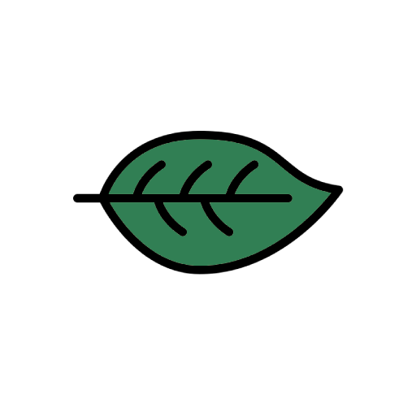

QUEM SOMOS
Olá! Sou estudante de Análise e Desenvolvimento de Sistemas na faculdade Cruzeiro do Sul Virtual. Este site é resultado de um projeto desenvolvido durante o primeiro semestre do curso, no qual explorei o uso da tecnologia para contribuir com a comunidade e o meio ambiente. A ideia do projeto nasceu do desejo de aplicar meus conhecimentos de forma prática e ao mesmo tempo ajudar a resolver um problema que afeta a todos: o descarte inadequado de resíduos. Com o apoio da faculdade e o envolvimento da comunidade, busquei criar uma ferramenta que pudesse ser útil e informativa, incentivando práticas sustentáveis e facilitando o acesso a informações essenciais sobre descarte correto.